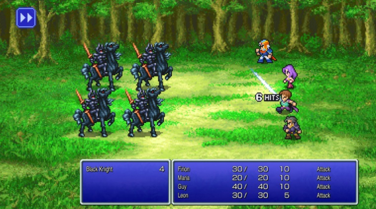
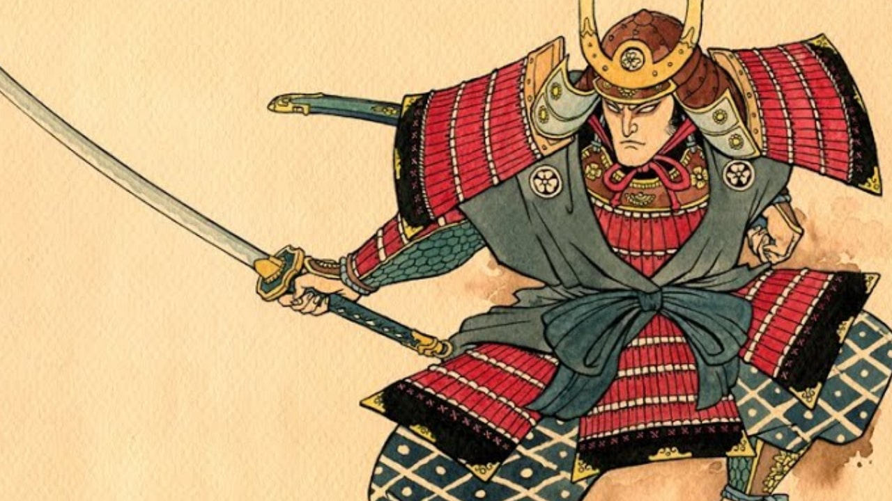
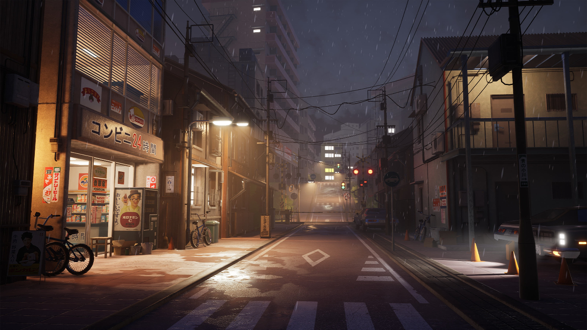
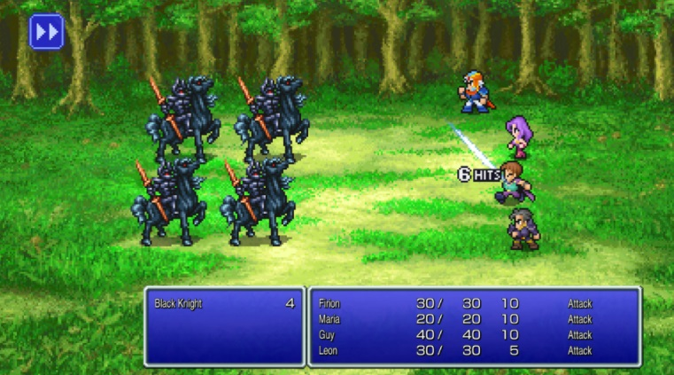
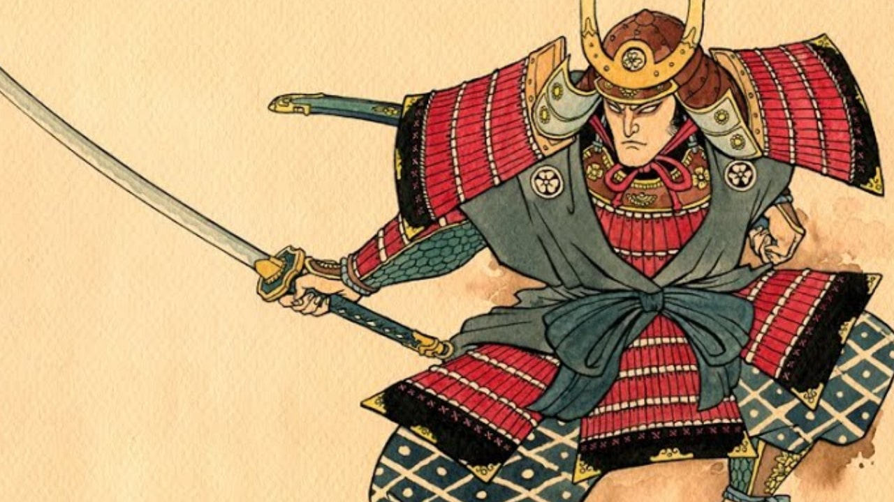
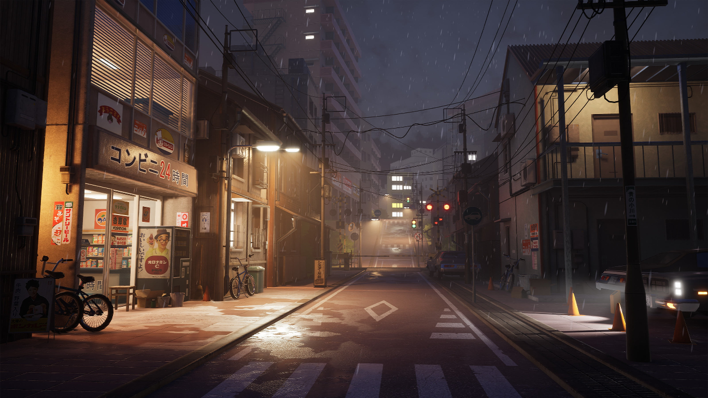
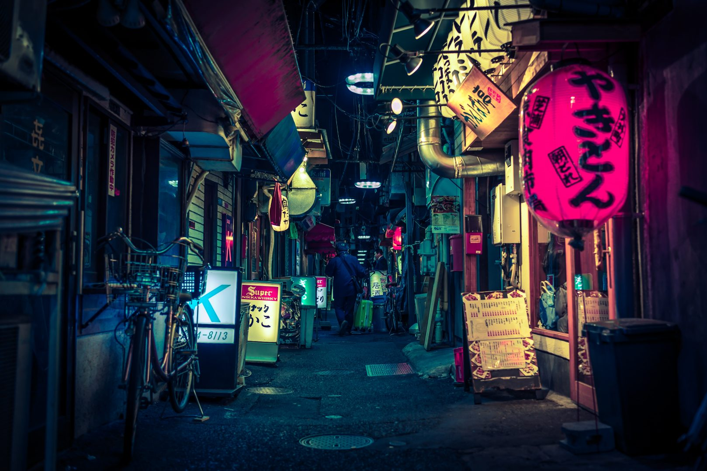
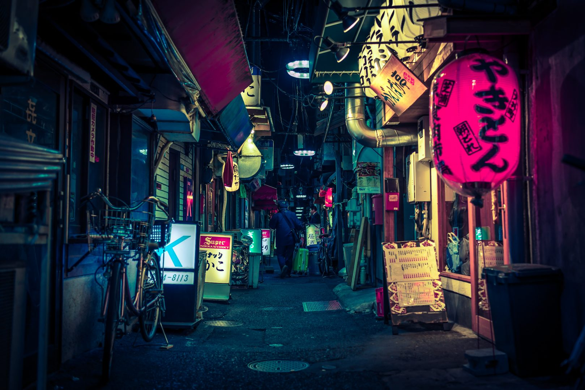

Cultura Pop

 





 

Japão: Mangás, animes e videogames
A cultura pop japonesa é uma importante vitrine para o Japão.
Os mangás, animes e os videogames japoneses são muito populares
e conquistam fãs mundo afora e, no país, os amantes desses produtos,
também chamados de otakus, representam uma identidade cultural
nipônica única que vale ser explorada.
O universo geek japonês já tem tanta visibilidade que se transformou em atrativo turístico. Hoje, é
possível
viajar pelo país e explorar os locais em que as animações e os quadrinhos foram inspirados, os bairros
dedicados à essa cultura e os eventos, parques e museus temáticos. A Organização Nacional do Turismo
Japonês
(JNTO) apresenta o Japão otaku e dá dicas de locais e atrações para vivenciar essa cultura.
Tóquio é muito retratada nas animações. A Tokyo Tower, um dos principais cartões postais da cidade, já
apareceu em diversas delas, como Sailor Moon, que conta a história da guerreira mágica destinada a
salvar a
Terra das forças do mal. O distrito de Shibuya e seu movimentado cruzamento também são cenários
recorrentes,
já apareceu em Chaos; Head, animação que conta a aventura de um jovem otaku que mora em um container e
passa
seus dias jogando e assistindo a animes.
A capital do Japão também aparece em diversas cenas do filme Your Name. Suas estações de trem, prédios e
bairros são retratados no anime que conta a história de dois jovens que não se conhecem e desejam se
mudar
de cidade e acabam ficando misteriosamente conectados pelos seus sonhos. Um lugar muito visitado por
conta
da animação é a escadaria do santuário xintoísta Suga, que foi fielmente representada.
A província de Saitama também é um destino otaku. Os fãs de Lucky Star costumam visitar a região. O
anime
conta a trajetória de quatro garotas, estudantes do ensino médio com personalidades bem distintas. As
personagens vivem em uma cidade inspirada em Kasukabe e a Estação Kasukabe e seu entorno aparecem
bastante
na produção, assim como o Santuário Washinomiya.
Já na cidade de Tokorozawa, está o Parque das Colinas Sayama, que recebeu o apelido de Floresta de
Totoro
por ter inspirado as cenas do famoso filme do Studio Ghibli, Meu Amigo Totoro. O filme conta a história
de
duas irmãs que se aventuram na floresta com espíritos amigáveis no Japão pós-guerra rural. O local é
propício para caminhadas e também é lar de uma estátua gigante de Totoro.
Ainda no universo dos filmes do Studio Ghibli, porém, em Matsuyama, na província de Ehime, está Dogo
Onsen.
O local é o spa mais antigo do Japão e serviu de inspiração para a icônica casa de banho “Aburaya” do
filme
vencedor do Oscar A Viagem de Chihiro.